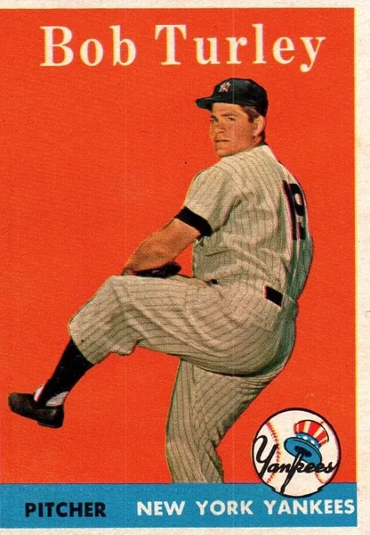
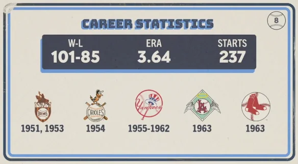

Bob Turley "Bullet Bob"
Career Highlights & Facts
(Facts are AI-generated and may require verification)
- Won the 1958 Cy Young Award while pitching for the New York Yankees.
- Earned the 1958 World Series Most Valuable Player award after securing two wins and a save.
- Led the American League in wins during the 1958 season with a total of 21 victories.
Would you like to find out more about Bob Turley?
Career Totals
| WAR | W | L | ERA | G | GS | SV | IP | SO | WHIP |
|---|---|---|---|---|---|---|---|---|---|
| 13.2 | 101 | 85 | 3.64 | 310 | 237 | 13 | 1712.2 | 1265 | 1.421 |
Statistics via Baseball-Reference.com
The Original Clue
